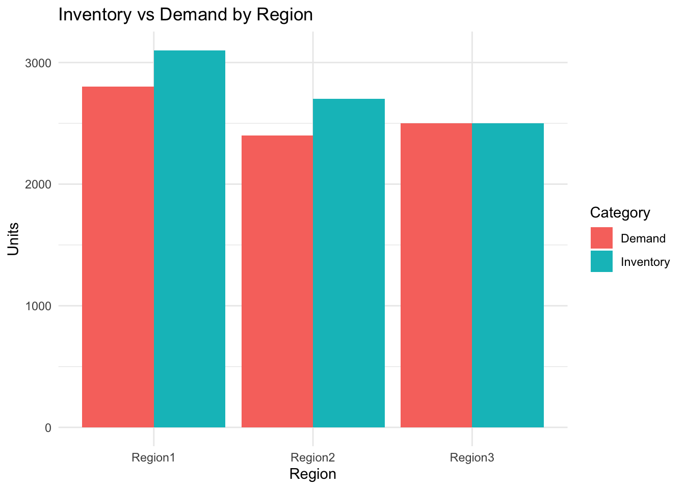
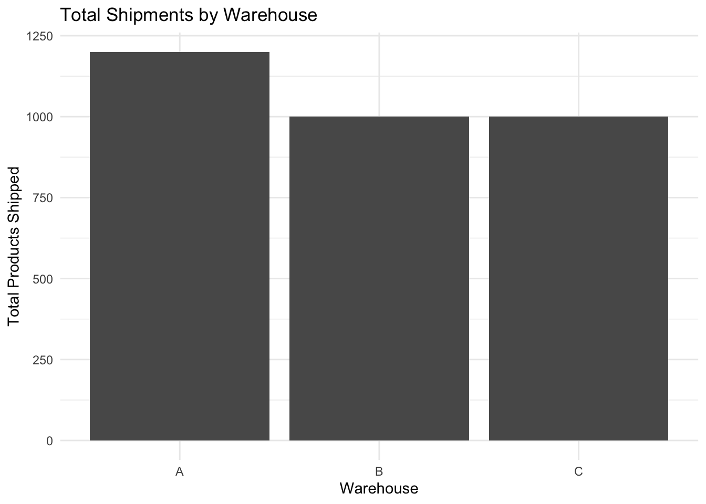

Region 3 has the greatest risk of an inventory risk of shortage because its available inventory is lowest relative to its demand. This could result in stock outs and an inability to fulfill customer orders. The company should consider reallocating inventory from regions with larger surpluses to Region 3 or increasing future inventory shipments to Region 3.
Rows: 3 Columns: 4
── Column specification ────────────────────────────────────────────────────────
Delimiter: ","
chr (1): Warehouse
dbl (3): Region1, Region2, Region3
ℹ Use `spec()` to retrieve the full column specification for this data.
ℹ Specify the column types or set `show_col_types = FALSE` to quiet this message.
shipment_data
# A tibble: 3 × 4
Warehouse Region1 Region2 Region3
<chr> <dbl> <dbl> <dbl>
1 A 300 400 500
2 B 400 350 250
3 C 500 300 200
# Visualization 1: Inventory vs Demand by Regionregion_summary <-data.frame(Region =c("Region1", "Region2", "Region3"),Inventory = total_inventory,Demand = demand_data2$Demand)region_summary_long <- region_summary %>%pivot_longer(cols =c(Inventory, Demand),names_to ="Type",values_to ="Units" )ggplot(region_summary_long, aes(x = Region, y = Units, fill = Type)) +geom_col(position ="dodge") +labs(title ="Inventory vs Demand by Region",x ="Region",y ="Units",fill ="Category" ) +theme_minimal()

# Visualization 2: Total Shipments by Warehousewarehouse_summary <-data.frame(Warehouse =c("A", "B", "C"),Total_Shipments = warehouse_totals)ggplot(warehouse_summary,aes(x = Warehouse, y = Total_Shipments)) +geom_col() +labs(title ="Total Shipments by Warehouse",x ="Warehouse",y ="Total Products Shipped" ) +theme_minimal()

Part C: Resource Allocation Model
Suppose inventory allocations must satisfy:
Express the system in matrix form.
\[
\begin{bmatrix}
1 & 1 & 1 \\
2 & 1 & 0 \\
0 & 1 & 2
\end{bmatrix}
\begin{bmatrix}
x \\
y \\
z
\end{bmatrix}
=
\begin{bmatrix}
18 \\
26 \\
22
\end{bmatrix}
\]Rewrite the system as Ax=b :
\[
A =
\begin{bmatrix}
1 & 1 & 1 \\
2 & 1 & 0 \\
0 & 1 & 2
\end{bmatrix}
\]\[
\mathbf{x} =
\begin{bmatrix}
x \\
y \\
z
\end{bmatrix}
\]\[
b =
\begin{bmatrix}
18 \\
26 \\
22
\end{bmatrix}
\]
2. Solve the System Computationally
#creating the coef matrixA <-matrix(c(1,1,1,2,1,0,0,1,2), nrow =3, byrow =TRUE)A
[,1] [,2] [,3]
[1,] 1 1 1
[2,] 2 1 0
[3,] 0 1 2
#create b vectorb <-c(18,26,22)b
[1] 18 26 22
#Solve for the unknown vector#solution <- solve(A, b)#solution#det(A)
Solving x, y, z using R result to error due to the solution not having singular value but multiple values,
Verify the Solution
we have:
x+y+z=18
2x+y=26
y+2z=22
solution:
x+y+z=18
2x+y+0z=26
0x+y+2z=22
3x+3y+3z=66
3(x+y+z)=66 =====> (x+y+z)= 66/3 ====> x+y+z=22
x=22-y-z ====> replace x by it value, 22-y-z+y+z= 18 ====> 22=18 the system has no solution
we could also try 2x+y+y+2z = 48 ====> 2x+2y+2z = 48 then x+y+z = 24
y =24 -x-z so if we replace the values we get x + 24 -x-z+z = 18 ==> 24 = 18
the system has no unique solution
recap: Since (24 \neq 18), the equations are inconsistent. Therefore, there is no set of values for (x), (y), and (z) that satisfies all three equations.
This is also confirmed computationally in R because solve(A, b) returns a singular-system error and det(A) is equal to 0.
Business interpretation
Based on the analysis, the system of linear equations does not provide a valid number of truckloads that each warehouse should ship because the coefficient matrix is singular and the equations are inconsistent. Therefore, values for (x), (y), and (z) cannot be determined from the current system, and management would need to review the constraints before making a truckload allocation decision.
However, the results from Parts A and B still provide useful information for management. In Part B, Warehouse A ships the most products with 1,200 units, while Warehouses B and C each ship 1,000 units. This shows that Warehouse A currently contributes the most to the shipment activity. Part A also shows that Region 3 has no inventory surplus, while Regions 1 and 2 each have a surplus of 300 units. Therefore, Region 3 is more at risk if demand increases.
Mathematical models help management evaluate the needs of each region and the capacity of each warehouse so resources can be allocated efficiently. Systems of linear equations are useful in supply chain planning and logistics because they represent relationships between different constraints and help determine whether a proposed allocation is mathematically feasible.